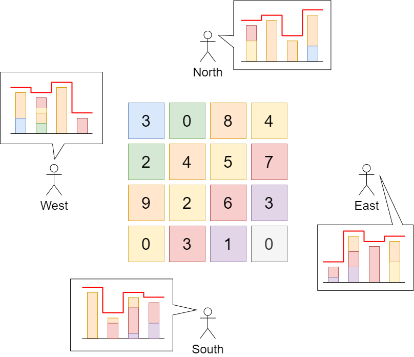

807. 保持城市天际线
预计算每行最大、每列最大；每个格子最多能加到两者中较矮的那个，全部加上就是答案。
思路
- 从四个方向看，天际线其实只有两组：每行的最大值、每列的最大值。
- 格子
(r,c)升高后既不能高过第r行的最大，也不能高过第c列的最大，上限是min(rowMax[r], colMax[c])。 - 反过来这个上限一定能取到：把每格都加到
min(rowMax, colMax)后，各行的最大格（本来就是行最大）不变，各列同理，天际线不动。 - 答案 = Σ
min(rowMax[r], colMax[c]) − grid[r][c]。
图解
最优解
1class Solution {2 public int maxIncreaseKeepingSkyline(int[][] grid) {3 int n = grid.length;4 // 四个方向的天际线其实只有两种：每行的最大（南北看）、每列的最大（东西看）5 int[] rowMax = new int[n], colMax = new int[n];6 for (int r = 0; r < n; r++)7 for (int c = 0; c < n; c++) {8 rowMax[r] = Math.max(rowMax[r], grid[r][c]);9 colMax[c] = Math.max(colMax[c], grid[r][c]);10 }11 int ans = 0;12 for (int r = 0; r < n; r++)13 for (int c = 0; c < n; c++)14 // 每格最高加到行、列天际线中较矮的那个，再多就顶穿某侧天际线15 ans += Math.min(rowMax[r], colMax[c]) - grid[r][c];16 return ans;17 }18}题目
给你一座由 n x n 个街区组成的城市，每个街区都包含一座立方体建筑。给你一个下标从 0 开始的 n x n 整数矩阵 grid ，其中 grid[r][c] 表示坐落于 r 行 c 列的建筑物的 高度 。
城市的 天际线 是从远处观察城市时，所有建筑物形成的外部轮廓。从东、南、西、北四个主要方向观测到的 天际线 可能不同。
我们被允许为 任意数量的建筑物 的高度增加 任意增量（不同建筑物的增量可能不同） 。 高度为 0 的建筑物的高度也可以增加。然而，增加的建筑物高度 不能影响 从任何主要方向观察城市得到的 天际线 。
在 不改变 从任何主要方向观测到的城市 天际线 的前提下，返回建筑物可以增加的 最大高度增量总和 。
示例 1：

输入：grid = [[3,0,8,4],[2,4,5,7],[9,2,6,3],[0,3,1,0]]
输出：35
解释：建筑物的高度如上图中心所示。
用红色绘制从不同方向观看得到的天际线。
在不影响天际线的情况下，增加建筑物的高度：
gridNew = [ [8, 4, 8, 7],
[7, 4, 7, 7],
[9, 4, 8, 7],
[3, 3, 3, 3] ]
示例 2：
输入：grid = [[0,0,0],[0,0,0],[0,0,0]] 输出：0 解释：增加任何建筑物的高度都会导致天际线的变化。
提示：
n == grid.lengthn == grid[r].length2 <= n <= 500 <= grid[r][c] <= 100
题面取自力扣当前版本。
数据快照 2026-11-04。题面版权归力扣所有，本站点仅供本人学习使用，请勿对外发布。